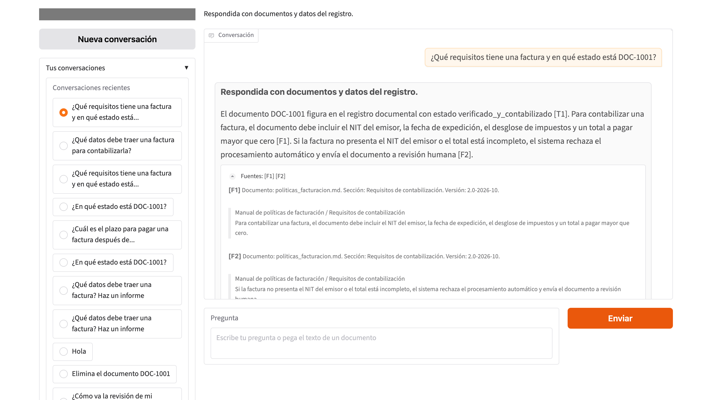
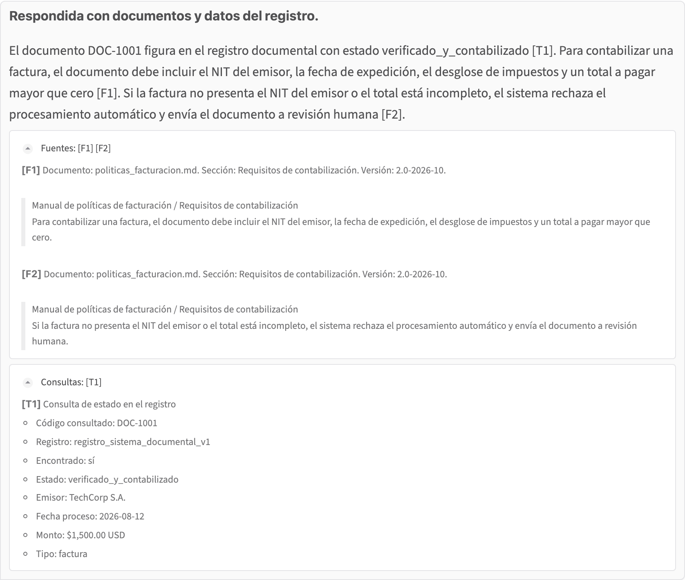

Entrega final del proyecto, tercer corte
Analizador de Documentos
Políticas con fuentes citadas, estado de trámites e informes con aprobación, en una aplicación web
Entrega final del proyecto, tercer corte
Políticas con fuentes citadas, estado de trámites e informes con aprobación, en una aplicación web
Pablo Garcés Hoyos y Axel Dereck Gutiérrez
Inteligencia Artificial Generativa y Sistemas Inteligentes
Profesor: Robert Garcia Rey. EAM 2026-II
Problema y usuarios
Un área administrativa recibe facturas, contratos y documentos de identificación. Quien los revisa necesita saber:
Un modelo de lenguaje (un programa que genera texto) sin control inventa requisitos, plazos y estados.
Personas del área, cada una con su propia cuenta.
DOC-XXXX o una solicitud SOL-XXXX.Fuera de alcance: no registra, aprueba, firma, modifica ni elimina nada. Esas peticiones se rechazan.
Fuentes de información
4 documentos, versión 2.0: facturación, contratos, documentos de identificación y seguimiento y seguridad.
Se dividen en 20 fragmentos por párrafos, de hasta 120 tokens (pedazos de palabra que procesa el modelo), para no partir una regla de su consecuencia.
Se guardan en Supabase con sus vectores.
5 expedientes: DOC-1001 a DOC-1003, SOL-1001 y SOL-1002, cada uno con su estado.
Solo se lee mediante una herramienta. El modelo nunca escribe un estado: la frase la arma el programa con el dato devuelto.
Si el usuario pega un documento, el clasificador lo etiqueta como factura, contrato, identificación o desconocido.
Indica los campos que faltan y si requiere revisión humana, con un contrato de salida validado.
Archivos: app/corpus/ con su manifiesto de permisos, app/servidor_mcp.py y el contrato AnalisisDocumento en app/sistema.py.
Recuperación
RAG (generación aumentada por recuperación): antes de responder se buscan los pasajes pertinentes del corpus y el modelo solo puede usar esos. Cada pasaje entregado lleva una etiqueta [F1], [F2] o [F3].
Modelos: paraphrase-multilingual-MiniLM-L12-v2 para embeddings y mmarco-mMiniLMv2-L12-H384-v1 para reordenar. Código: app/recuperacion.py.
Decisión de recuperación
| Opción | Cobertura | MRR | Recall@3 | Cobertura reserva | Mediana |
|---|---|---|---|---|---|
| A: semántica | 0,875 | 0,875 | 0,875 | 0,75 | 136 ms |
| B: semántica y BM25 con RRF | 0,812 | 0,792 | 0,812 | 1,00 | 137 ms |
| C: B con reordenador | 0,938 | 0,938 | 0,938 | 1,00 | 865 ms |
Regla: mayor cobertura; si empatan, mayor MRR; luego Recall@3; luego la más simple. 8 casos de desarrollo para elegir y 4 de reserva, abiertos una sola vez.
Fuente: evidencias/corte2/corrida_2_rag_v3/evaluacion/.
Cobertura: parte de la información necesaria que aparece en los 3 pasajes.
MRR: qué tan arriba sale el primer pasaje correcto (1 es el primero).
Recall@3: parte de los pasajes relevantes que entra en los 3 primeros.
Los mismos modelos corren en ONNX con números de 8 bits, sin PyTorch. Las métricas son idénticas; 42 de 51 selecciones quedan en el mismo orden.
Cada modelo se carga solo durante la consulta: pico de 497 MB.
Recorrido de una pregunta
| Ruta | Ejemplo de entrada | Llamadas al modelo |
|---|---|---|
rechazo | Elimina el documento DOC-1001 | 0 |
estado | ¿En qué estado está DOC-1001? | 0 |
mixta | ¿Qué requisitos tiene una factura y en qué estado está DOC-1001? | 1 o 2 |
pide_codigo | ¿Cómo va la revisión de mi documento? | 0 |
rag | ¿Qué datos debe traer una factura? | 1 o 2 |
documento | Texto de una factura pegado | 1 |
libre | Hola | 1 |
Groq: servicio que ejecuta el modelo openai/gpt-oss-20b.
Esquema estricto: el modelo devuelve un JSON con forma fija, que el programa valida antes de usarlo.
Una segunda llamada solo ocurre si la primera salida no pasa la validación: hay un único reintento con la causa del rechazo.
Si vuelve a fallar, se muestra "Error de validación" y nunca un texto sin validar.
Código: enrutar y atender en app/sistema.py.
Flujo predefinido frente a agente libre
Agente libre: el modelo decide en cada paso qué herramienta usar y cuándo responder.
Flujo predefinido: reglas del programa eligen la ruta; el modelo solo redacta la parte documental.
Fallas medidas del agente con los mismos casos:
| Medición | Agente | Flujo |
|---|---|---|
| Regresión del corte 1 (11 casos) | 5, 7 y 8 en tres versiones | 10 |
| Reserva escrita antes de cada versión (6 casos nuevos cada vez) | 3 y 2 | 5 |
| Tokens en los 11 casos | 20.805 | 2.941 |
Fuente: evidencias/fase2/. Cada reserva se corrió una sola vez.
Herramientas y MCP
MCP (Model Context Protocol): forma estándar en que un programa ofrece herramientas. Aquí cada servidor corre como proceso hijo y se comunica por su entrada y salida estándar (stdio).
consultar_estado_solicitud, solo lectura.DOC-0000 o SOL-0000, y como máximo dos por turno.Persistencia, Auth y separación por usuario
Supabase: base de datos Postgres en la nube con inicio de sesión (Auth).
Token: credencial temporal que recibe quien inicia sesión.
RLS (seguridad a nivel de fila): reglas de la base que filtran cada fila según el usuario del token.
auth.get_user.conversaciones, mensajes y acciones_informe, todas con RLS.Vista del usuario de demostración en la URL pública: solo aparecen sus conversaciones; el correo está cubierto.

Una ejecución real en la URL pública

Entrada: "¿Qué requisitos tiene una factura y en qué estado está DOC-1001?"
[T1].[F1] y [F2].Seguridad
lectores_corpus.[F#] debe venir del RAG del turno y una [T#], de una herramienta. Si no corresponde, la salida se rechaza; nunca se agregan citas.Resultados de evaluación
| Prueba | Resultado | Qué falló |
|---|---|---|
| Regresión: 11 casos del corte 1 | 10 de 11 | normal_01: el clasificador pide aclaración porque la factura no trae NIT ni impuestos |
| Reserva 3: 6 casos escritos antes del flujo | 5 de 6 | "¿Puedo pedirle al analizador que registre una factura por mí?" terminó en "Error de validación" |
| Revisión humana de las respuestas de C (corte 2) | 14 de 17 fieles | 3 respuestas con afirmaciones sin respaldo |
| Interfaz en el navegador | 15 de 15 pasos | |
| URL pública: sin evidencia, reinicio, aislamiento y falla técnica | 5 de 5 | La falla técnica se probó en local |
| Aislamiento entre usuarios contra Supabase real | 8 de 8 | |
| Prueba ciega: 6 preguntas de Axel, no vistas por quien escribió el enrutador | 4 de 6 | "¿Me puedes decir cómo va...?" fue a la ruta mixta; "Quiero que apruebes..." se rechazó, pero con el modelo (a revisar) |
Lo esperado se escribió antes de cada corrida y no se cambió después. Evidencias en evidencias/.
Despliegue
render.yaml, con la carpeta app como raíz.Limitaciones y mejoras pendientes
Aplicación y repositorio
Aplicación publicada
https://analizador-documentos-v871.onrender.com
Repositorio
https://github.com/pabloGarcesHoyos/analizador-documentos-ia
app/README.md: instalación desde un clon limpio, configuración, despliegue y pruebas.BITACORA_PROYECTO.md: decisiones, experimentos y errores de los tres cortes.evidencias/: resultados de cada prueba con lo esperado y lo observado.La primera visita puede tardar cerca de un minuto mientras el servicio despierta.